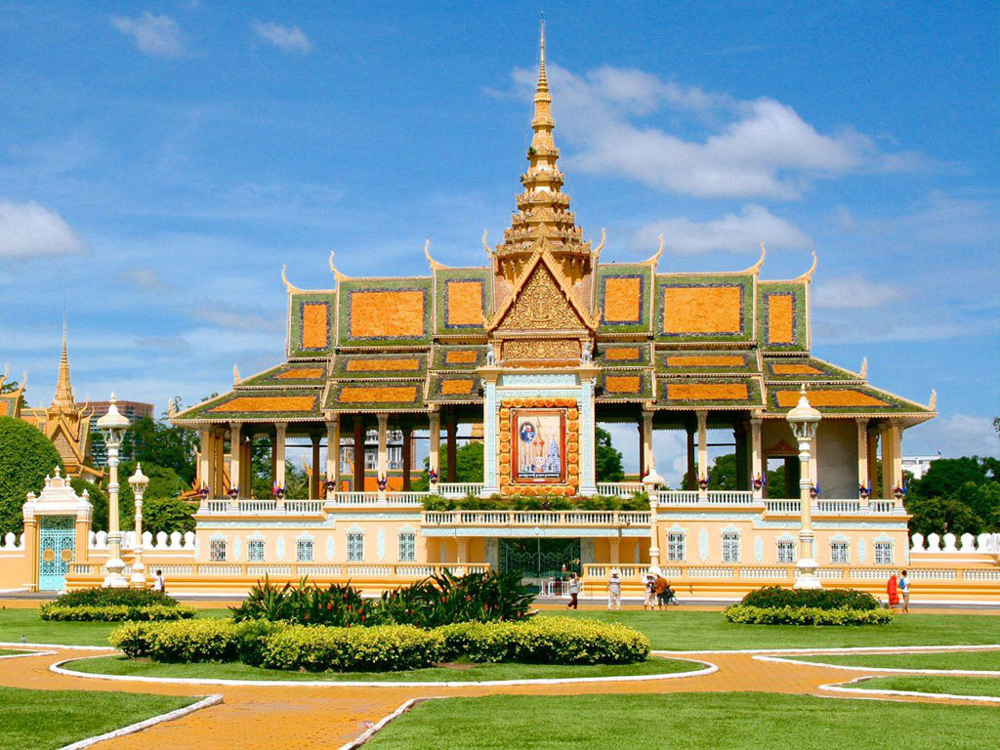
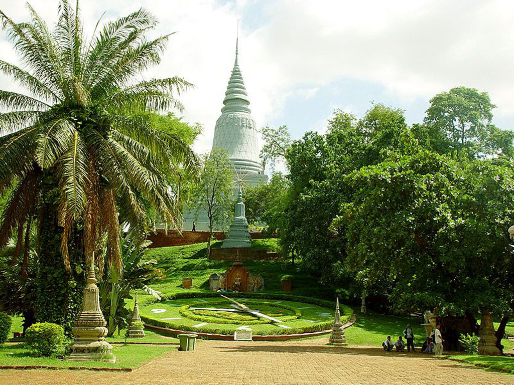
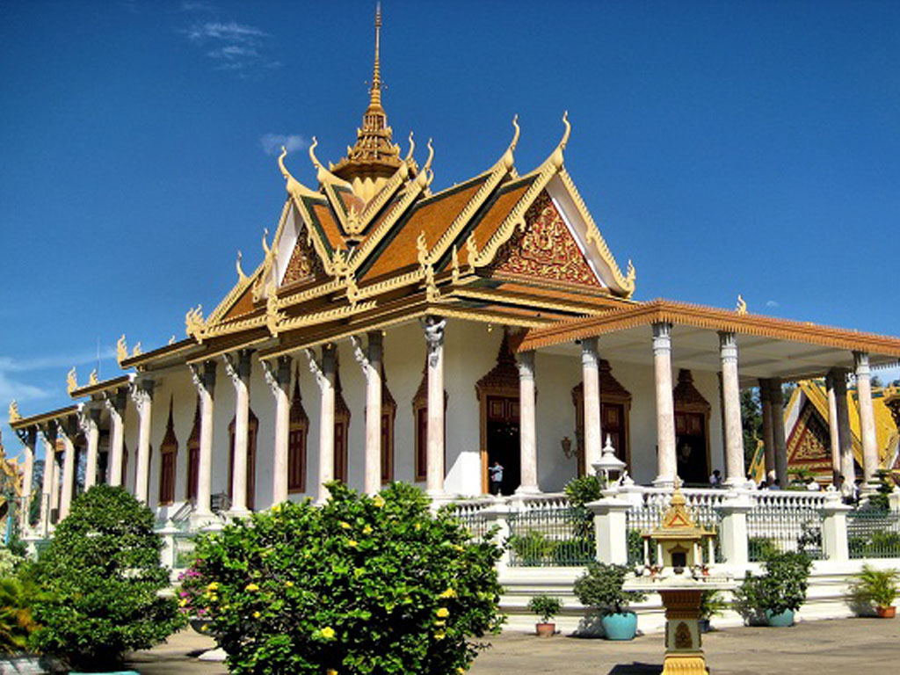
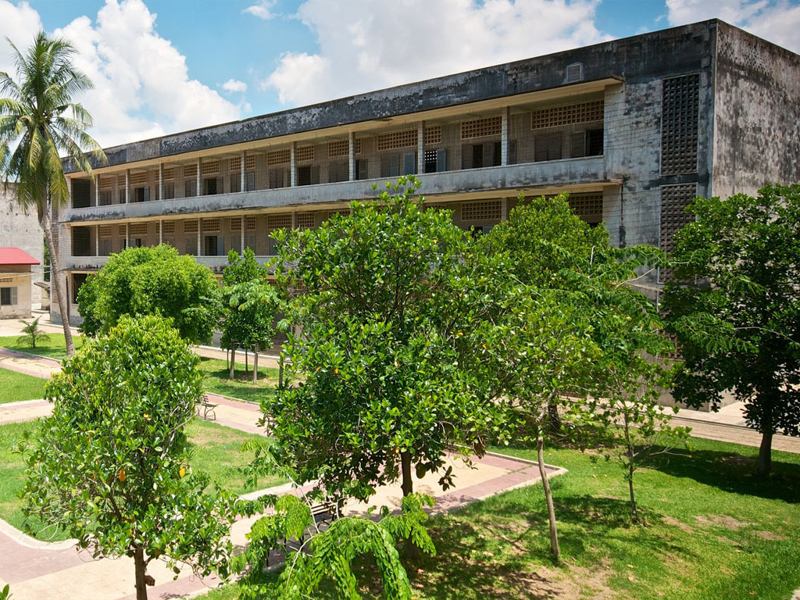
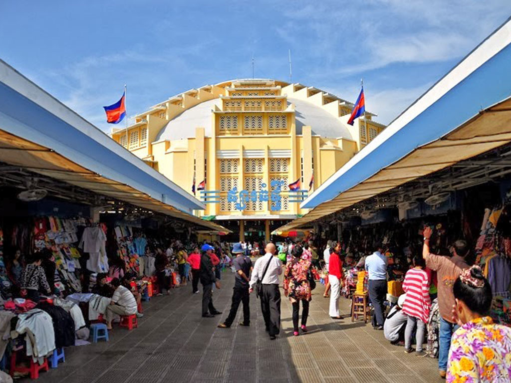
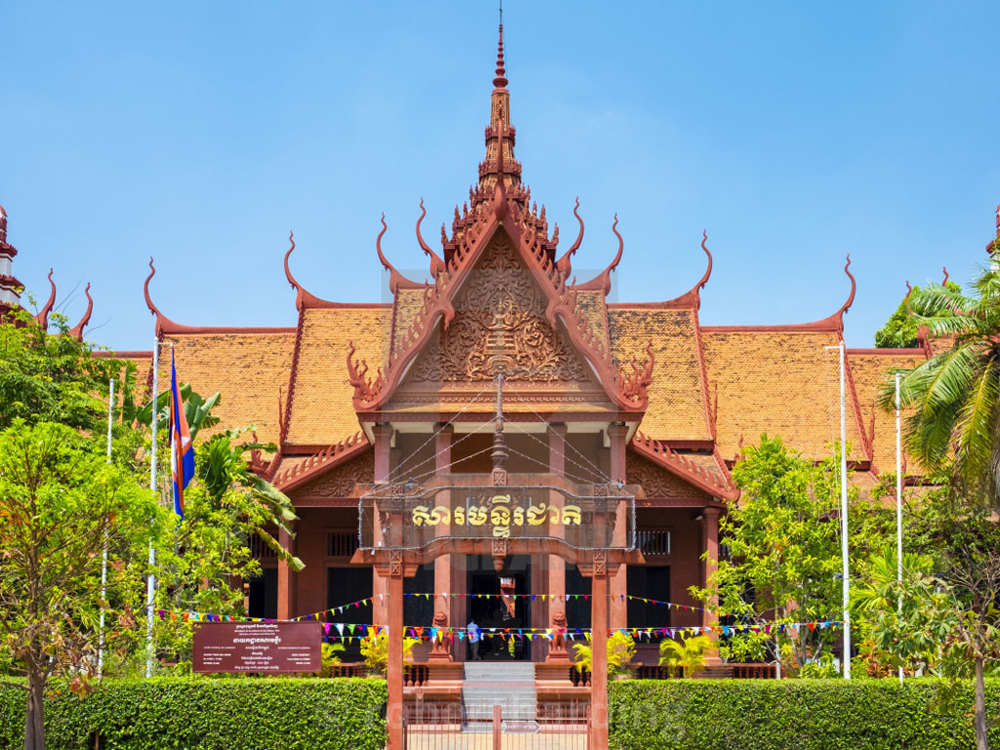
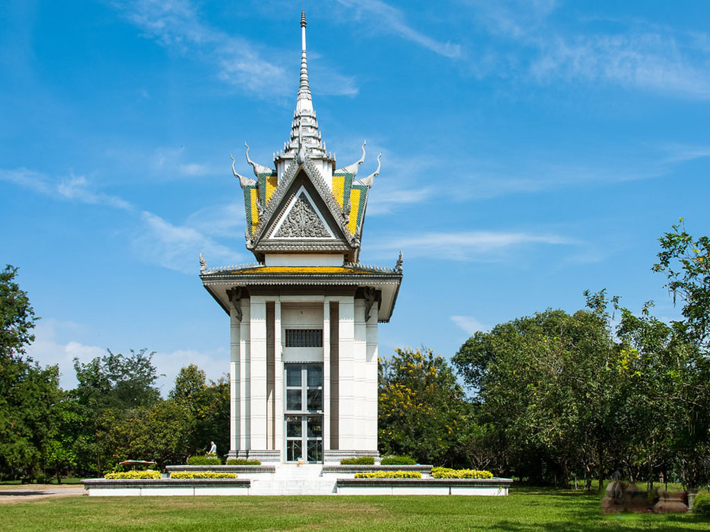
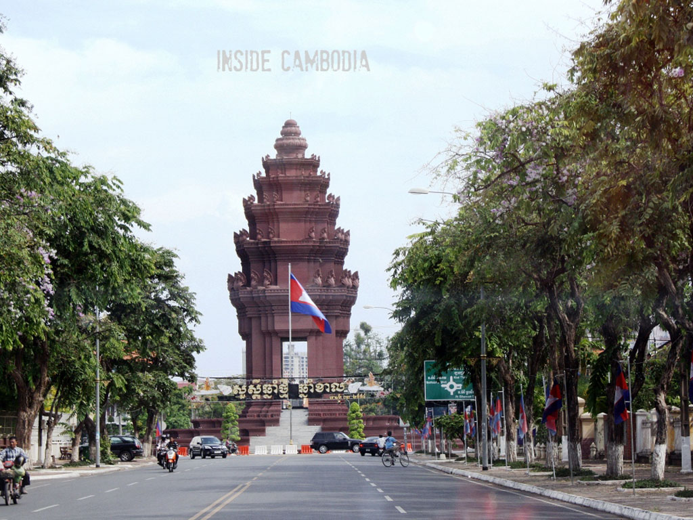

Phnom Penh

A mixture of Asian exotica, the famous Cambodian hospitality awaits
visitors to the capital of the Kingdom of Cambodia. Situated at the
confluence of three great rivers, the ‘four arms’ of the Mekong,
Tonle Sap and Bassac, form right in front of the Royal Palace. Phnom
Penh is the commercial, political and cultural hub of the Kingdom
and is home to over one million of the country’s estimated 11.4
million people. It is also the gateway to an exotic land….the world
heritage site, the largest religious complex in the world, the
temples of Angkor in the west, the beaches of the southern coast and
the ethnic minorities of the northeastern provinces. The city offers
several cultural and historical attractions including the Royal
Palace, Silver Pagoda and the National Museum. There are also a wide
variety of services including five star hotels and budget guest
houses, fine international dining, sidewalk noodle shops,
neighborhood pubs, international discos and more. Phnom Penh, like
other Asian-city tourist destinations, is in the midst of rapid
change. Over the past few years, the number of restaurants and
hotels have grown considerably and in the last year there has been a
huge increase in the number of visitors. Three overland border
crossings have opened since 1998 and now there are daily direct
flights from several Asian cities. Even travel within the country is
easier with road conditions gradually improving, several airlines
flying domestic routes, and regular bus service to major cities like
Sihanouk ville and Kampong Cham. Cambodia is becoming easier to
visit everyday.

Royal Palace
The Royal Palace, in Chey Chumneas, Phnom Penh, Cambodia, is a
complex of buildings which serves as the royal residence of the
king of Cambodia. Its full name in the Khmer language is Preah
Barum Reachea Veang Chaktomuk Serei Mongkol. The Kings of Cambodia
have occupied it since it was built in the 1860s, with a period of
absence when the country came into turmoil during and after the
reign of the Khmer Rouge. The palace was constructed between 1866
and 1870, after King Norodom relocated the royal capital from
Oudong to Phnom Penh. It was built atop an old citadel called
Banteay Kev. It faces approximately East and is situated at the
Western bank of the cross division of the Tonle Sap River and the
Mekong River called Chaktomuk.
See More

Wat Phnom
Wat Phnom is a Buddhist temple located in Phnom Penh, Cambodia. It
was built in 1372, and stands 27 metres above the ground. It is
the tallest religious structure in the city. The pagoda was given
the name of Wat Preah Chedey Borapaut. Wat Phnom is the central
point of Phnom Penh.Legend relates that a wealthy widow called
Penh (commonly referred to as Daun Penh, Grandmother Penh, in
Khmer) found a large koki tree in the river. Inside the tree she
found four bronze statues of the Buddha. Penh constructed a small
shrine on an artificial hill made by the people living in the
village to protect the sacred statues. Eventually this became a
sacred site and sanctuary where people would make blessings and
pray.In 2015, the Phnom Penh municipality was planning to renovate
the monument.
See More

Preah Vihear Preah Keo Morakot.
The Silver Pagoda is located on the south side of the Royal Palace
in Chey Chumneas, Phnom Penh. The official name is Wat Ubaosoth
Ratanaram, also known as Wat Preah Keo Morakot which is commonly
shortened to Wat Preah Keo in Khmer. The vihara houses many
national treasures including many golds and jeweled Buddha
statues. The most significant are a small green crystal Buddha,
and a life-sized gold Maitreya Buddha commissioned by King
Sisowath, weighing 90 kg and dressed in royal regalia and set with
9584 diamonds, the largest of which weighing 25 carats, created in
the palace workshops during 1906 and 1907. After the Cambodian
Civil War the gold Maitreya Buddha lost most of its two-thousand
diamonds. During King Norodom Sihanouk's pre-Khmer Rouge reign,
the Silver Pagoda.
See More

Tuol Sleng Genocide Museum
The Tuol Sleng Genocide Museum is a museum in Phnom Penh, the
capital of Cambodia, chronicling the Cambodian genocide. The site
is a former secondary school which was used as Security Prison 21
by the Khmer Rouge regime from its rise to power in 1975 to its
fall in 1979. From 1976 to 1979, an estimated 20,000 people were
imprisoned at Tuol Sleng. Tuol Sleng means "Hill of the Poisonous
Trees" or "Strychnine Hill". Tuol Sleng was just one of at least
150 torture and execution centers established by the Khmer Rouge,
though other sources put the figure at 196 prison centers. On July
26, 2010, the Extraordinary Chambers in the Courts of Cambodia
convicted the chief of Tuol Sleng Prison, Kang Kek Iew, for crimes
against humanity and grave breaches of the 1949 Geneva Conventions
and sentenced him to life imprisonment.
See More

Central Market
The Central Market is an Art Deco landmark of Phnom Penh, the
capital of Cambodia. The bright yellow building completed in 1937
has a 26m high central dome, with four tall arch-roofed arms
branching out diagonally across the block, creating vast hallways
housing countless stalls and all kinds of goods. Initially
designed by city architect Jean Desbois, construction works were
supervised by French architect Louis Chauchon. When it first
opened in 1937, it was said to be the biggest market in Asia;
today it still operates as a market. After Phnom Penh became the
capital of the French protectorate of Cambodia within French
Indochina in 1867, the population grew enormously and the French
set about creating a spacious modern city.
See More

National Museum of Cambodia
The National Museum of Cambodia in Chey Chumneas, Phnom Penh is
Cambodia's largest museum of cultural history and is the country's
leading historical and archaeological museum. The museum houses
one of the world's largest collections of Khmer art, including
sculptural, Khmer ceramics, bronzes, and ethnographic objects. Its
collection includes over 14,000 items, from prehistoric times to
periods before, during and after the Khmer Empire, which at its
height stretched from Thailand, across present-day Cambodia, to
southern Vietnam. The National Museum of Cambodia is located on
Street 13 in central Phnom Penh, to the north of the Royal Palace
and on the west side of Veal Preah Man square. The visitors'
entrance to the compound is at the corner of Streets 13 and 178.
See More

Choeung Ek Genocidal Center
Choeung Ek is the site of a former orchard and mass grave of
victims of the Khmer Rouge – killed between 1975 and 1979 – in
Dangkao Section, Phnom Penh, Cambodia, about 17 kilometres south
of the Phnom Penh city centre. It is the best-known of the sites
known as The Killing Fields, where the Khmer Rouge regime executed
over one million people between 1975 and 1979. Mass graves
containing 8,895 bodies were discovered at Choeung Ek after the
fall of the Khmer Rouge regime. Many of the dead were former
political prisoners who were kept by the Khmer Rouge in their Tuol
Sleng detention center and in other Cambodian detention centers.
Today, Choeung Ek is a memorial, marked by a Buddhist stupa. The
stupa has acrylic glass sides and is filled with more than 5,000
human skulls.
See More

Independence Monument
The Independence Monument in Phnom Penh, capital of Cambodia, was
built in 1958 to memorialize Cambodia's independence from France
in 1953. It stands on the intersection of Norodom Boulevard and
Sihanouk Boulevard in the centre of the city. It is in the form of
a lotus-shaped stupa, of the style seen at the Khmer temple at
Banteay Srei and other Khmer historical sites. The Independence
Monument was designed by the Cambodian architect Vann Molyvann,
who was “personally selected and instructed” by Prince Norodom
Sihanouk on how it should look like, combining “the religious and
the secular.” It stands 37 meters tall. During national
celebrations, The Independence Monument is the center of activity.
A ceremonial flame on the interior pedestal is often lit by a
royal.
See More

Jonh Doe
Wow Greate!